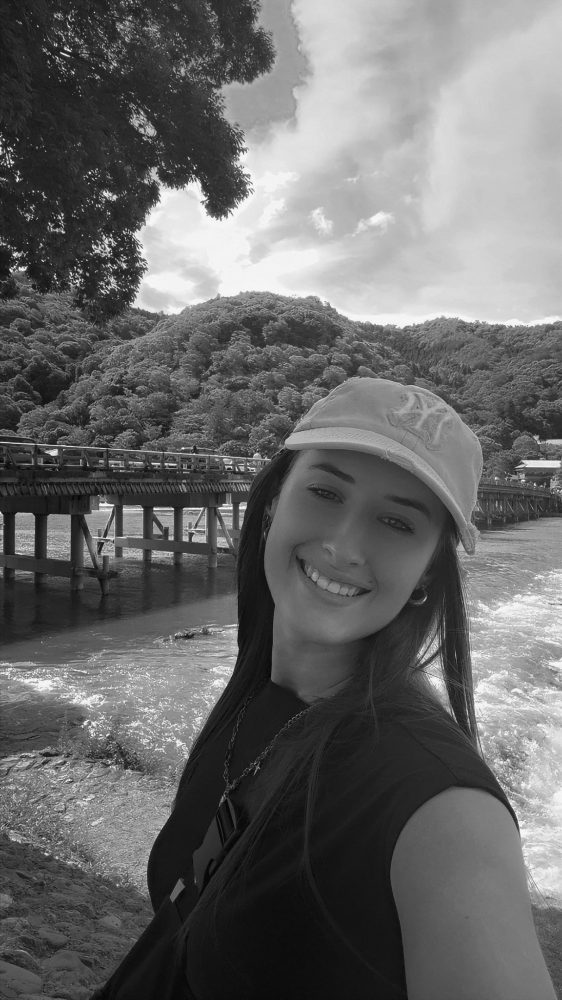
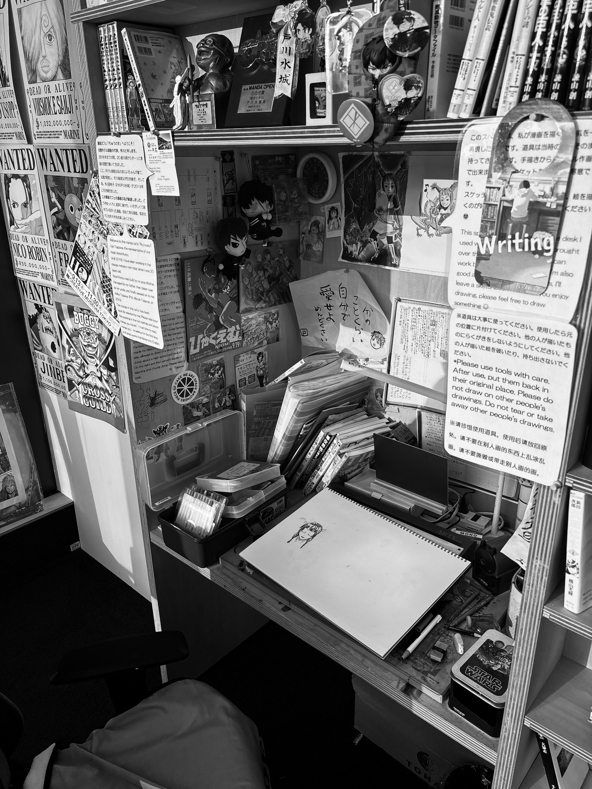

Lucia Lorenz
──── ✦ ────
Graduated from Virginia Polytechnic Institute and State University with a bachelor's degree in Creative Writing and Professional & Technical Writing. Experienced in writing, editing, and audience-focused communication, with a passion for transforming complex ideas into clear, engaging content.
Education
Virginia Polytechnic Institute and State University
B.A. Creative Writing
B.A. Professional & Technical Writing
Skills
Writing
Editing
Research
Content Design
Audience Analysis
Professional Communication

